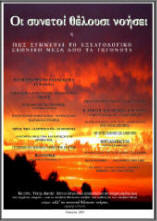

“The wise shall understand”
How the stage is being set for the last days, through current events...
“One wonderful and unique quality that the Word of God has, besides all the others of course, is that it is prophetic.
It is something that shook me when I first came into contact with the Holy Scriptures, at the age of 24, and I confess that it still shakes me. When I decided to do this work, I wanted first of all to gather and put in order all this material – from newspapers, magazines, books, leaflets and the internet – that I had collected over recent years and that relates to the last days. The truth is that I always wanted to keep informed about the various events and developments in Greece and in the world. But ever since I understood that many of the events taking place in our days are connected with the Word of God, and especially with the completing of the end-times jigsaw, my interest grew. The person who studies the Word of God and pores over it with reverence, besides all the other benefits and blessings they enjoy, also becomes a fully informed person. And this is no exaggeration. So events come to bear witness together with the eternal truths of the Word of God. But the nearer the Day comes, the better we can see.” Thanasis Sotiriou, Nafplio, March 2007. [Part 1] [Part 2] [Part 3] [Part 4]~ Published on the website: alleluia.gr ~